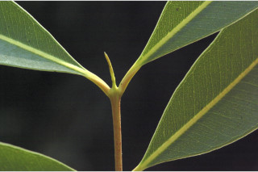
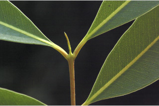
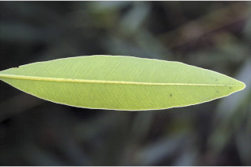
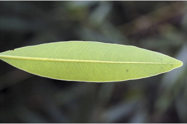

Small trees up to 10 m tall.
10 ಮೀ. ಎತ್ತರದವರೆಗೆ ಬೆಳೆಯುವ ಮರಗಳು.
Small trees up to 10 m tall.
சிறியமரங்கள் 10 மீ. உயரம் வரை வளரக்கூடியது.
Bark rough, greyish brown, irregularly flaky; blaze reddish brown.
ತೊಗಟೆ ಒರಟಾಗಿರುತ್ತದೆ ಮತ್ತು ಬೂದು ಮಿಶ್ರಿತ ಕಂದು ಬಣ್ಣದಲ್ಲಿದ್ದು ಅನಿಯತವಾದ ಚಕ್ಕೆ ರೂಪದಲ್ಲಿರುತ್ತದೆ;ಕಚ್ಚು ಮಾಡಿದ ಜಾಗ ಕೆಂಪು ಮಿಶ್ರಿತ ಕಂದು ಬಣ್ಣದಲ್ಲಿರುತ್ತದೆ.
Bark rough, greyish brown, irregularly flaky; blaze reddish brown.
மரத்தின் பட்டை சொரசொரப்பானது, சாம்பல்-ப்ரவுன் நிறமானது, ஒழுங்கற்ற செதில்களாக உதிருபவை; உள்பட்டை சிவப்பு ப்ரவுன் நிறமானது.
Young branchlets quadrangular, glabrous.
ಕಿರುಕೊಂಬೆಗಳು 4- ಕೋನಯುಕ್ತವಾಗಿದ್ದು ರೋಮರಹಿತವಾಗಿರುತ್ತವೆ.
Young branchlets quadrangular, glabrous.
சிறிய நுனிக்கிளைகள் குறுக்குவெட்டுத் தோற்றத்தில் நான்கு கோணங்களுடையது, உரோமங்களற்றது.
Leaves simple, opposite, decussate; petiole up to 1 cm long, planoconvex in cross section, glabrous; lamina up to 10 x 2.5 cm, narrow oblong, oblong-lanceolate, apex obtuse or acute with blunt tip, base attenuate, margin entire, pellucid gland dotted, coriaceous, shining above, glabrous beneath; midrib slightly canaliculate above; intramarginal nerve present; secondary_nerves many, parallel, slender; tertiary_nerves admedially ramified.
ಎಲೆಗಳು ಸರಳವಾಗಿದ್ದು ಅಭಿಮುಖವಾಗಿ ಜೋಡನೆಗೊಂಡಿದ್ದು ಕಾಂಡದ ಎರಡೂ ಕಡೆ ಎದುರು ಬದರಿನ ಲಂಬ ಸಾಲಿನಲ್ಲಿರುತ್ತವೆ;ತೊಟ್ಟುಗಳು 1 ಸೆಂ.ಮೀ.ವರೆಗಿನ ಉದ್ದಹೊಂದಿದ್ದು ಹಾಗೂ ಅಡ್ಡ ಸೀಳಿದಾಗ ಸಪಾಟ ಪೀನ ಮಧ್ಯದ ಆಕಾರದಲ್ಲಿರುತ್ತವೆ ಮತ್ತು ರೋಮರಹಿತವಾಗಿರುತ್ತವೆ; ಪತ್ರಗಳು ಹಾಗೂ 10 X 2.5 ಸೆಂ.ಮೀ.ವರೆಗಿನ ಗಾತ್ರವಿದ್ದು ಸಂಕುಚಿತ ಚತುರಸ್ರ,ಚತುರಸ್ರ-ಭರ್ಜಿಯ ಆಕಾರ,ಚೂಪಲ್ಲದ ಅಥವಾ ಮೊಂಡಾದ ಅಗ್ರವುಳ್ಳ ಚೂಪಾದ ತುದಿ,ಒಳಬಾಗಿದ ಬುಡ,ನಯವಾದ ಅಂಚು,ಪ್ರಕಾಶ ಭೇಧ್ಯ ರಸಗ್ರಂಥಿ ಚುಕ್ಕೆಗಳ ಸಮೇತವಿದ್ದು ತೊಗಲನ್ನೋಲುವ ಮೇಲ್ಮೈ ಹೊಂದಿದ್ದು ಹೊಳಪುಳ್ಳ ಮೇಲ್ಭಾಗ, ರೋಮರಹಿತವಾದ ತಳ ಭಾಗವನ್ನು ಹೊಂದಿರುತ್ತವೆ;ಮಧ್ಯನಾಳ ಮೇಲ್ಭಾಗದಲ್ಲಿ ಕೊಂಚವಾಗಿ ಕಾಲುವೆಗೆರೆ ಸಮೇತವಿರುತ್ತದೆ;ಅಂತರ ಅಂಚಿನ ನಾಳಗಳು ಇರುತ್ತವೆ;ಎರಡನೇ ದರ್ಜೆಯ ನಾಳಗಳು ಹೆಚ್ಚಿನ ಸಂಖ್ಯೆಯಲ್ಲಿದ್ದು, ಸಮಾನಾತರದಲ್ಲಿದ್ದು ತೆಳುವಾಗಿರುತ್ತವೆ; ಮೂರನೇ ದರ್ಜೆಯ ನಾಳಗಳ ಕವಲುಗಳು ಎಲೆಯ ಅಕ್ಷದ ಕಡೆಗಿರುತ್ತವೆ.
Leaves simple, opposite, decussate; petiole up to 1 cm long, planoconvex in cross section, glabrous; lamina up to 10 x 2.5 cm, narrow oblong, oblong-lanceolate, apex obtuse or acute with blunt tip, base attenuate, margin entire, pellucid gland dotted, coriaceous, shining above, glabrous beneath; midrib slightly canaliculate above; intramarginal nerve present; secondary_nerves many, parallel, slender; tertiary_nerves admedially ramified.
இலைகள் தனித்தவை, எதிரடுக்கமானவை, குறுக்குமறுக்கானவை; இலைக்காம்பு up முதல் 1 செ.மீ. நீளமானது, இலைக்காம்பு குறுக்குவெட்டுத் தோற்றத்தில் பிளேனோகான்வக்ஸ், உரோமங்களற்றது; இலை அலகு 10 X 2.5 செ.மீ., குறுகிய நீள்சதுர வடிவானது, நீள்சதுர-ஈட்டி வடிவானது, அலகின் நுனி மெட்டையானது அல்லது கூரியது அதன் முனை மழுங்கியது, அலகின் தளம் அட்டனுவேட், அலகின் விளிம்பு முழுமையானது, ஒளிபுகும் சுரப்பி புள்ளிகளுடையது, கோரியேசியஸ், அலகின் மேற்பரப்பு பளபளப்பானது, உரோமங்களற்றது; மையநரம்பு மேற்புறத்தில் அலகின் பரப்பைவிட சிறிது பள்ளமானது; விளிம்பு நரம்பு (இண்ட்ராமார்ஜினல் நரம்பு) கொண்டது; இரண்டாம் நிலை நரம்புகள் எண்ணற்றவை, இணையானவை, மெல்லியது; மூன்றாம் நிலை நரம்புகள் அட்மீடியல்லி ராமிபைடு.
Inflorescence cymes, usually lateral, from the scars of fallen leaves, rarely axillary, flowers white, sessile or shortly pedicelled.
ಪುಷ್ಪಮಂಜರಿ ಮಧ್ಯಾರಂಭಿ ಮಾದರಿಯಲ್ಲಿ, ಸಾಮಾನ್ಯವಾಗಿ ಪಾರ್ಶ್ವದಲ್ಲಿದ್ದು ಉದುರಿದ ಎಲೆಗಳ ಕುರುಹುಗಳಲ್ಲಿರುತ್ತವೆ,ಅಪರೂಪವಾಗಿ ಅಕ್ಷಾಕಂಕುಳಿನಲ್ಲಿರುತ್ತವೆ,ಹೂಗಳು ಬಿಳಿಯಾಗಿದ್ದು ತೊಟ್ಟುರಹಿತವಾಗಿ ಅಥವಾ ಕಿರುತೊಟ್ಟುಗಳ ಸಮೇತವಿರುತ್ತವೆ.
Inflorescence cymes, usually lateral, from the scars of fallen leaves, rarely axillary, flowers white, sessile or shortly pedicelled.
மஞ்சரி சைம் வகை, பொரும்பாலும் பக்கவாட்டில் காணப்படுபவை, இலைகளற்ற முதிர்ந்த கிளைகளில் தோன்றுபவை, அரிதாக இலைக்கோணங்களில் காணப்படுபவை, மலர்கள் வெள்ளை நிறமானது, காம்பற்றது அல்லது சிறிய மலர்காம்புடையது.
Berry, oblong-ellipsoid, ca. 1 cm long, crowned by calyx lobes.
ಬೆರ್ರಿ ಫಲಗಳು ಚತುರಸ್ರ-ಅಂಡವೃತ್ತವಾಗಿದ್ದು ಅಂದಾಜು 1 ಸೆಂ.ಮೀ. ಉದ್ದ ಹೊಂದಿದ್ದು ಮುಕುಟದಲ್ಲಿ ಶಾಶ್ವತವಾಗಿ ಉಳಿಯುವ ಪುಷ್ಪಪಾತ್ರೆಯ ಸಮೇತವಿರುತ್ತವೆ.
Berry, oblong-ellipsoid, ca. 1 cm long, crowned by calyx lobes.
முழுச்சதைகனி (பெர்ரி), நீள்சதுர-நீள்வட்ட வடிவானது, 1 செ.மீ. நீளமானது, நிரந்தரமான புல்லி இதழ்களுடையவை.

 

 
